Hepatitis Viruses
Sopheap Oeng
30 Oct 2025
Objectives
- Describe hepatitis virus morphology
- Summarize key characteristics
- Outline replication stages
- Explain transmission routes
- Identify infection risk factors
- Describe pathogenesis and clinical course
- List diagnostic methods
- Summarize treatment options
Introduction
- Hepatitis: viral liver inflammation (A-E and G)
- Key signs: jaundice, fatigue, nausea, dark urine; ↑ liver enzymes
- Transmission: fecal–oral (A, E); blood/sexual/perinatal (B, C, D, G)
- Outcomes: A/E usually acute; B/C/D often chronic → cirrhosis and HCC risk
- Diagnosis: liver tests, serology/PCR
- Prevention: vaccines (A, B)
- Treatment: antivirals (B, C), supportive care
Introduction (cont.)
Comparative features of hepatitis viruses
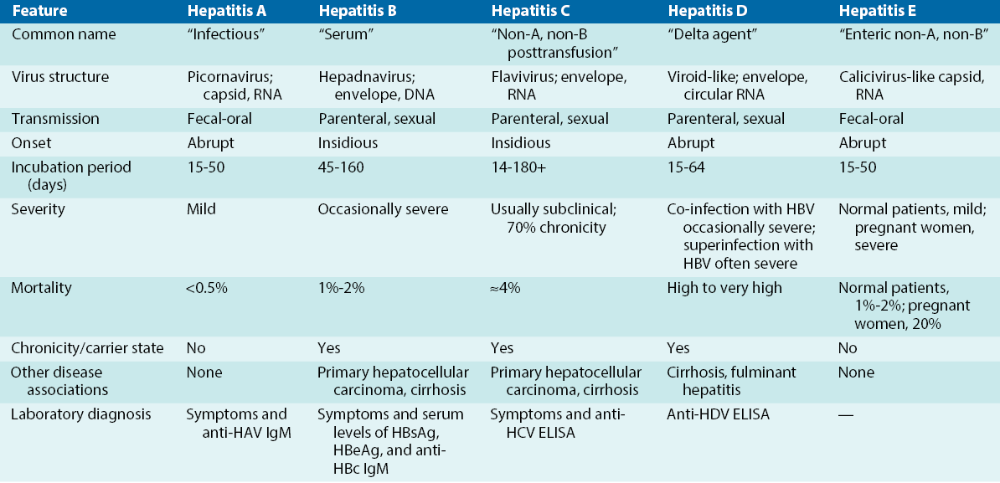Comparative features of hepatitis viruses
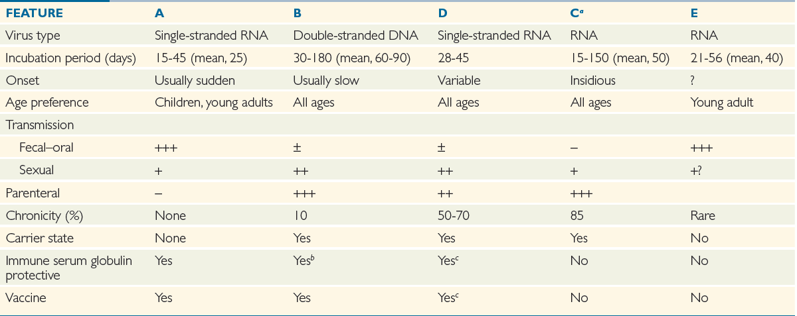HEPATITIS A VIRUS
Overview
- Acute hepatitis by HAV (Picornaviridae, Hepatovirus)
- Fecal–oral spread: contaminated food/water, shellfish, close contact
- Incubation 15–50 days (≈25); children often asymptomatic
- Dx: anti‑HAV IgM (acute); IgG = past infection/vaccine
- 99% of healthy adults self-limiting, develop lifelong immunity
- Prevention: hygiene, immune globulin post‑exposure, inactivated vaccine
Structure
- Virion: non-enveloped, icosahedral, ~27 nm
- Genome: +ssRNA (~7.5 kb) with VPg at 5′ and poly(A) tail at 3′
- Expression: single ORF → polyprotein, cleaved into structural (VP1–VP4) and nonstructural proteins
- Environmental stability: acid- and solvent-resistant; persists in water/food; inactivated by chlorination, adequate heat (>60 °C), formalin, or UV
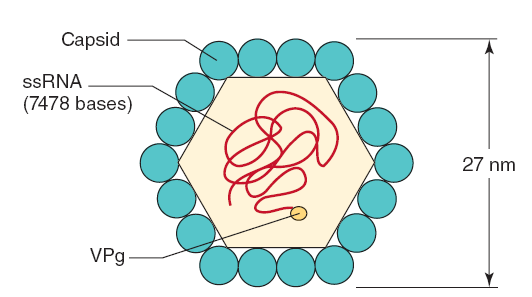
Replication
- Receptor: TIM‑1 (HAVCR1) on hepatocytes
- Entry: receptor‑mediated endocytosis → uncoating in endosome
- Genome: +ssRNA (~7.5 kb, VPg‑linked) — serves as mRNA
- Translation/replication: single ORF → polyprotein → proteolytic cleavage
- Assembly/release: cytoplasmic capsid assembly; released non‑enveloped
- Tropism: hepatocytes
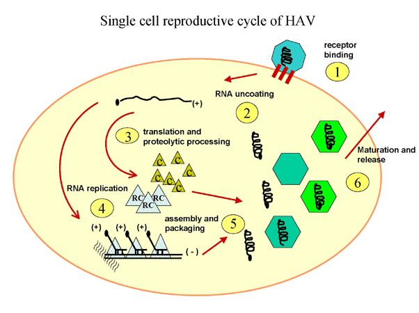
Pathogenesis
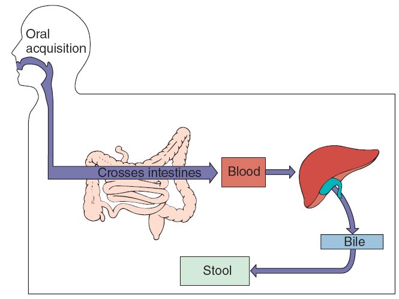Pathogenesis and immunity
- Entry: ingestion → replicates in oropharyngeal/intestine → primary viremia → hepatocytes/Kupffer cells
- Liver injury: immune‑mediated (T cells); minimal direct cytopathic effect
- Shedding: high fecal viral load ~10–14 days before jaundice; peaks at symptom onset
- Immunity: anti‑HAV IgM in acute, replaced by durable IgG → lifelong immunity
- Outcome: usually self‑limited (incubation ~15–50 days); fulminant hepatitis rare (~0.1%)
Epidemiology
- Reservoir: humans (chimpanzees experimentally susceptible)
- Distribution: worldwide; highest where sanitation is poor
- Risk factors: poor sanitation, contaminated food/water, crowded settings, travel
- Outcomes/immunity: usually self‑limited; fulminant disease rare; anti‑HAV IgG = long‑lasting immunity
Clinical syndromes
- Most infections are asymptomatic, especially in children
- Incubation/shedding: 15–50 days (mean ~25); fecal shedding peaks ~1–2 weeks before symptoms
- Adults: abrupt onset of fever, fatigue, nausea, anorexia, and abdominal pain; jaundice in ~70–80%
- Children (<6 years): usually mild or asymptomatic; jaundice ≈10%
- Course: symptoms intensify for several days before the icteric phase; ~99% recover, fulminant hepatitis is rare (~0.1%)
Clinical syndromes

Laboratory diagnosis
- Anti‑HAV IgM (EIA/ELISA) — indicates acute/recent infection
- Anti‑HAV IgG — past infection or vaccine‑induced immunity
- HAV RNA (RT‑PCR, stool or serum) — early detection and outbreak/genotyping
- Specimens: serum/plasma for serology; stool or serum for PCR
Treatment, prevention, and control
- Treatment: supportive care — rest, fluids, nutrition
- Prevent fecal–oral spread: safe water and food, hand hygiene, avoid raw shellfish
- Water: boil or chlorinate to inactivate HAV
- Post‑exposure: immune globulin within 2 weeks
- Vaccination: inactivated vaccine, recommended for travelers and high‑risk groups
HEPATITIS B VIRUS
Overview
- Hepatitis B in family Hepadnaviridae
- Tropism: primarily hepatocytes
- Transmission: blood, sexual contact, perinatal
- Incubation: 6 weeks–6 months (average ~90 days)
- Chronicity: ~5–10% in adults; up to 90% in perinatal infections
- Complications: cirrhosis and hepatocellular carcinoma
- Diagnosis: HBsAg, HBeAg, anti-HBc, HBV DNA testing
Note
Global burden: >250 million chronic infections and ~1 million deaths/year
Overview start 3.30 -> 10.37min (cont.)
Structure
- Genome: dsDNA ≈3.2 kb; repairs to cccDNA in nucleus
- Particles
- Dane (envelop + core + DNA): infectious enveloped virion (~42 nm)
- Subviral (envelop only): noninfectious HBsAg spheres/filaments (abundant)
- Proteins
- HBsAg (S/M/L): envelope, attachment, vaccine target
- HBcAg: capsid
- HBeAg: secreted marker of active replication
- Polymerase (P): primer + reverse transcriptase + RNase H
- HBx: regulatory, linked to pathogenesis/oncogenesis
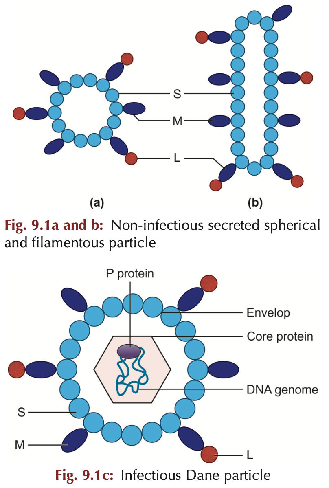
Replication
- Tropism: hepatocytes
- Entry: endocytosis → nucleocapsid to nucleus
- Genome: partial ds rcDNA → repaired to cccDNA
- Transcription/replication: host Pol II → pgRNA; viral RT → rcDNA
- Assembly/release: bud into ER/Golgi, acquire HBsAg; excess subviral HBsAg released
- Integration: occasional host DNA integration → oncogenesis
Replication (cont.)
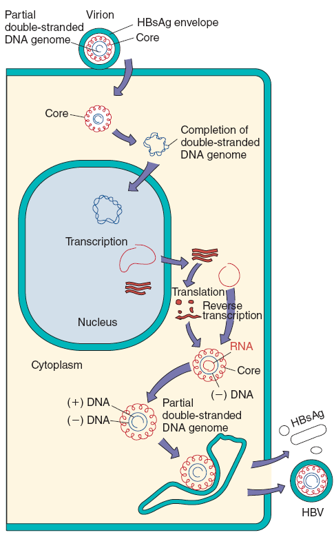
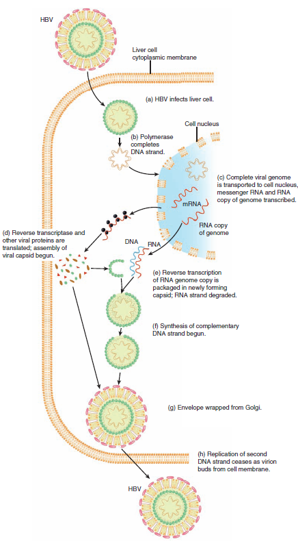
Pathogenesis and immunity
- Outcomes: asymptomatic, acute, or chronic disease
- Transmission: blood, sexual, perinatal; virus present in various body fluids
- Liver injury: immune‑mediated; HBV itself is minimally cytopathic
- Incubation: weeks–months (≈90 days); cccDNA persistence enables latency
- Clearance requires strong multispecific CD4+/CD8+ responses + anti‑HBs; weak/tolerant responses → chronicity
- Chronic sequelae: fibrosis, cirrhosis, HCC; HBeAg/HBsAg indicate high replication
Pathogenesis and immunity
- Acute: hepatocellular swelling
- Infiltrate: lymphocytes with Kupffer cell activation
- Injury: immune‑mediated cytotoxic T cell killing, minimal direct viral cytopathy
- Resolution: strong CD4+/CD8+ responses and anti‑HBs → viral clearance and regeneration
- Chronicity: weak/tolerant immunity → persistent infection, fibrosis, cirrhosis, ↑ HCC risk
- Markers: HBeAg and high HBV DNA = active replication; HBsAg loss and anti‑HBs = recovery
Pathogenesis
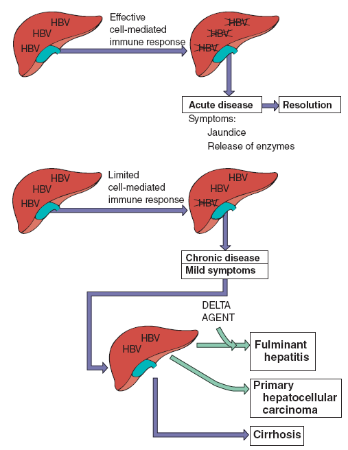Epidemiology
- Global burden: ~296 million chronically infected; ~820,000 deaths/year
- Highest prevalence: sub‑Saharan Africa, East/Southeast Asia, Amazon, Pacific Islands
- Main transmission routes: perinatal (mother→infant), early‑childhood, sexual contact, percutaneous exposures (blood, unsafe injections, IDU)
- High‑risk groups: infants of HBsAg+ mothers, people from endemic regions, people who inject drugs, MSM, healthcare workers, hemodialysis/transfusion recipients
- Key controls: timely birth‑dose and routine infant vaccination, maternal screening + antivirals in pregnancy, safe blood/injection practices, harm‑reduction services
Clinical syndromes for acute infection
- Incubation: prolonged (weeks–months); often insidious onset
- Prodrome: fever, malaise, anorexia → nausea, vomiting, abdominal discomfort, myalgias
- Icteric phase: jaundice, dark urine, pale stools, pruritus
- Course: severity variable; adults more often symptomatic than children
- Fulminant hepatitis: rare (~1%) — acute liver failure with encephalopathy, coagulopathy, ascites, and bleeding
- Immune‑complex–mediated extrahepatic manifestations: rash, arthralgia/polyarthritis, serum‑sickness–like illness, necrotizing vasculitis, and glomerulonephritis
Clinical syndrom for chronic infection (cont.)
- Progression: ~5–10% of adult infections become chronic; much higher after perinatal exposure
- Clinical states:
- Inactive carrier: HBsAg positive with low/undetectable HBV DNA and normal ALT — minimal ongoing liver injury
- Chronic active hepatitis: persistent inflammation → progressive fibrosis, cirrhosis, liver failure
- Complications: cirrhosis and HCC. Mechanisms include chronic inflammation and occasional viral DNA integration into the host genom
- Latency to HCC: highly variable (reported ≈9–35 years or longer)
Clinical syndromes for chronic infection (cont.)
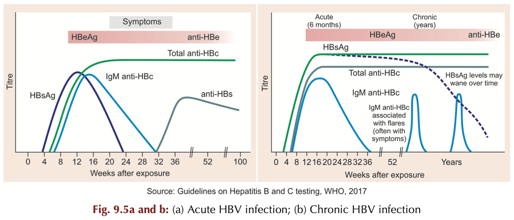Laboratory diagnosis
- Initial evaluation
- Clinical assessment + LFTs ALT AST ALP total bilirubin
- CBC and coagulation INR if severe
- Staging and specimens
- FibroScan or liver biopsy for fibrosis
- Serum or plasma for testing
- Molecular testing
- HBV DNA quantitative PCR — viral load and treatment guide
- Genotype testing when indicated
Laboratory diagnosis (cont.)
- Serology
- HBsAg — current infection
- HBeAg — high replication and infectivity
- Anti-HBs — immunity from recovery or vaccine
- Anti-HBc IgM — recent infection
- Anti-HBc total — prior or current infection not from vaccine
Treatment prevention and control
- Acute HBV
- Supportive care and monitoring
- Antivirals for fulminant or severe disease per specialist
- Chronic HBV
- Goals suppress viral replication prevent progression to cirrhosis and HCC
- First-line antivirals tenofovir disoproxil fumarate TDF tenofovir alafenamide TAF entecavir
- Pegylated interferon for selected patients
- Avoid agents with high resistance when possible
Treatment prevention and control (cont.)
- Prevention and public health
- Universal infant vaccination with timely birth dose within 24 hours
- HBIG plus vaccine for infants of HBsAg positive mothers
- Screening of blood organ donors and pregnant women
- Safe injection practices needle exchange harm reduction and safe sex counseling
- Patient counselling
- Explain transmission routes alcohol avoidance and adherence to monitoring and therapy
- Refer to hepatology or infectious diseases for treatment and long term follow up
HEPATITIS C VIRUSES
Overview
- Major cause of non‑A/non‑B hepatitis, formerly common post‑transfusion
- ~170 million global carriers, ~4 million in US
- Bloodborne transmission with high chronicity
- Chronic infection → cirrhosis and hepatocellular carcinoma
- Incubation 6–12 weeks
Structure
- Genus Hepacivirus
- Family Flaviviridae
- Size 30–60 nm
- Envelope, icosahedral
- Genome +ssRNA ~9.1 kb single ORF
- Encodes ~10 proteins
- Envelope glycoproteins E1 E2
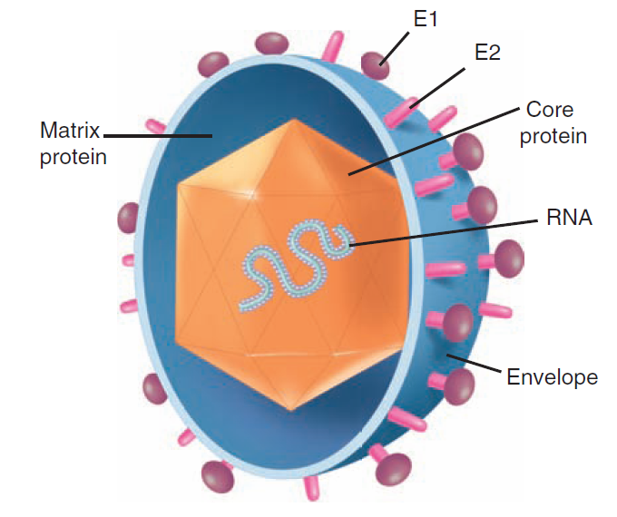
Replication
- Host: humans and chimpanzees; tropism: hepatocytes
- Entry: receptor-mediated endocytosis and endosomal fusion
- Genome: +ssRNA functions as mRNA → translated → polyprotein
- Replication: (+)RNA → dsRNA replicative intermediate → new (+) genomes
- Assembly/release: buds into ER as lipoviroparticles, secreted via VLDL pathway
- Immune evasion: inhibits IFN signaling and apoptosis (PKR, TNF pathways)
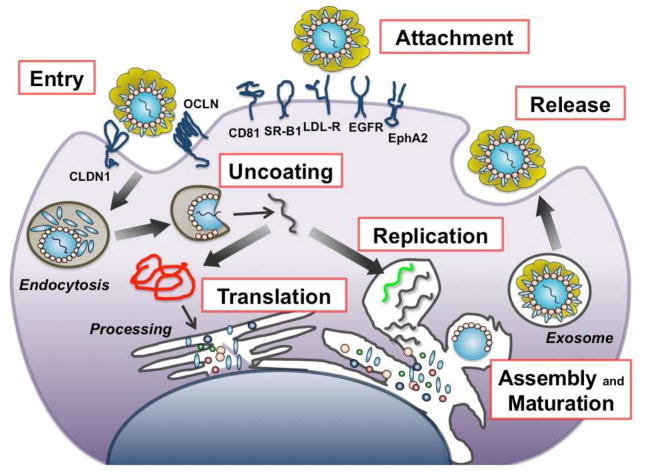
Pathogenesis and immunity
- Invades B and T lymphocytes and monocytes then infects hepatocytes
- Promotes cell survival leading to persistent infection
- Cell-mediated immunity mediates viral clearance and liver injury
- Chronic infection exhausts CD8 T cells and impairs viral elimination
- Histology shows inflammation, portal and periportal fibrosis, and lobular necrosis
- Chronic inflammation and regeneration increase hepatocellular carcinoma risk
- Anti-HCV antibodies are not protective
Epidemiology
- Transmission: bloodborne, sexual
- High risk: people who inject drugs, transfusion/organ recipients, tattoo recipients, hemophiliacs
- Global burden: ~58 million chronically infected, ~350k deaths/year
Clinical syndromes
- Acute: often asymptomatic; ~15% clear infection
- Chronic: ~70–80% progress to chronic infection with risk of cirrhosis and HCC
- Common symptom: persistent fatigue
Diagnosis
- Anti‑HCV antibody screening, confirm with HCV RNA by RT-PCR
- Use viral load for treatment monitoring
Treatment and prevention
- Direct‑acting antivirals (E.g Glecaprevir) achieve cure in >90% of cases
- Prevent: blood screening, harm reduction (needle programs), safe tattooing, avoid alcohol
HEPATITIS G VIRUS
Overview & transmission
- GBV‑C (human pegivirus, HPgV) — enveloped, +ssRNA, ≈9.3 kb
- Bloodborne, sexual, and perinatal spread
- Often chronic and asymptomatic
Clinical significance
- No consistent link to clinical hepatitis
- Clearance associated with anti‑E2 antibodies
Diagnosis
- GBV‑C RNA by RT‑PCR for active infection
- Anti‑E2 indicates prior cleared infection
Treatment & prevention
- No specific therapy or vaccine
- Prevent via blood safety and infection control
HEPATITIS D VIRUS
Overview
- HDV infects ~15 million people worldwide and increases fulminant hepatitis risk
- Defective satellite virus requiring HBsAg for assembly and spread
- Relies on HBV for envelope and hepatocyte entry
- Encodes one protein and depends on host enzymes for replication
Structure and replication
- Genome: circular negative ssRNA ~1700 nt forming rodlike structure by base pairing
- Virion: ~35–37 nm, delta Ag core wrapped by HBsAg envelope
- Delta antigen: small 24 kDa and large 27 kDa forms with distinct roles
- Replication: host RNA polymerase II transcribes genome, ribozyme cleavage, RNA editing generates large delta Ag for packaging
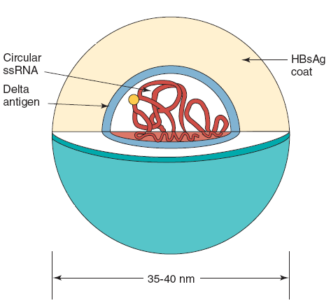
Pathogenesis
- Occurs only with HBV coinfection or superinfection
- Superinfection of chronic HBV often causes more severe and rapidly progressive liver disease
- Liver injury from direct cytopathic effects of HDV plus immune mediated damage
Diagnosis
- HDV RNA by RT‑PCR or anti‑HDV antibodies by ELISA
- Test patients with acute or severe HBV disease and chronic HBV carriers with worsening liver injury
Treatment and prevention
- No widely approved specific antiviral for HDV in many regions
- Manage underlying HBV and refer to hepatology for emerging therapies and trials
- Prevent HDV by HBV vaccination and blood safety measures
HEPATITIS E VIRUS
Hepatitis E virus
- HEV: fecal–oral, waterborne outbreaks from contaminated water
- Taxonomy: Hepeviridae, genus Hepevirus
- Structure: nonenveloped icosahedral +ssRNA, ~27–34 nm
- Epidemiology: outbreaks in low‑resource regions; sporadic zoonotic cases elsewhere
- Genotypes: 1–2 mainly human (waterborne); 3–4 zoonotic (pigs)
Hepatitis E virus (cont.)
- Clinical: acute, HAV‑like illness; usually not chronic in immunocompetent hosts
- Severity: mortality ~1–2%; markedly higher (~20%) in third‑trimester pregnancy
- Prevention: safe water, sanitation, hygiene; vaccine licensed in some countries
- Diagnosis: anti‑HEV IgM and HEV RNA by RT-PCR for acute infection
Quiz
Which of the following Hepatitis viruses is typically transmitted through the fecal-oral route?
- Hepatitis B
- Hepatitis C
- Hepatitis A
- Hepatitis D
Which Hepatitis virus is most likely to cause chronic infection in adults?
- Hepatitis A
- Hepatitis B
- Hepatitis E
- Hepatitis G
What is the primary mode of transmission for Hepatitis C virus?
- Fecal-oral
- Bloodborne
- Sexual contact only
- Airborne
Which Hepatitis virus requires coinfection with Hepatitis B virus to replicate?
- Hepatitis A
- Hepatitis C
- Hepatitis D
- Hepatitis E
What is the most effective prevention method for Hepatitis B virus infection?
- Hand washing
- Vaccination
- Safe water
- Condom use
Which Hepatitis virus has the highest mortality rate during pregnancy?
- Hepatitis A
- Hepatitis B
- Hepatitis C
- Hepatitis E
What type of genome does Hepatitis B virus have?
- Single-stranded RNA
- Double-stranded RNA
- Single-stranded DNA
- Double-stranded DNA
Which Hepatitis virus is classified in the Flaviviridae family?
- Hepatitis A
- Hepatitis B
- Hepatitis C
- Hepatitis D
References
- Adapted from training material: Chhay Sokdalis (PharmD).
- Murray PR, Rosenthal KS, Pfaller MA. Medical Microbiology. 7th ed. Elsevier; 2013.
- Ryan KJ, Ray CG, editors. Sherris Medical Microbiology. 6th ed. McGraw-Hill; 2014.
- Riedel S, Morse S, Mietzner T, Miller S, editors. Jawetz, Melnick & Adelberg’s Medical Microbiology. McGraw-Hill; 2019.
- Mishra B. Textbook of Medical Virology. 2nd ed. CBS Publishers & Distributors; 2022.
1.
Sokdalis C. Virology training materials. 2024.
2.
Hulo C, Masson P, de Castro E, Le Mercier P. Vol. 39, Nucleic Acids Research. 2011 [cited 2025 Oct 24]. p. D708–13 ViralZone: A knowledge resource to understand virus diversity. Available from: https://viralzone.expasy.org/
3.
Louten J. Essential human virology. London, UK; San Diego, CA, USA; Cambridge, MA, USA; Oxford, UK: Elsevier (Academic Press); 2016.
4.
Das S, Saha R. Microbiology practical manual, third edition. New Delhi, India: CBS Publishers & Distributors Pvt Ltd; n.d.
5.
Mishra B. Textbook of medical virology, second edition. New Delhi, India: CBS Publishers & Distributors Pvt. Ltd.; 2022.
6.
Tille PM. Bailey & scott’s diagnostic microbiology, 14th edition. 14th ed. St. Louis, Missouri, USA: Elsevier; 2017.
7.
Kudesia G, Wreghitt T. Clinical and diagnostic virology. Cambridge, UK; New York, USA; Melbourne, Australia; Madrid, Spain; Cape Town, South Africa; Singapore; São Paulo, Brazil: Cambridge University Press; 2009.
8.
Knipe DM, Howley PM. Fields virology: Emerging viruses. 7th ed. Vol. 1. Wolters Kluwer; 2022.